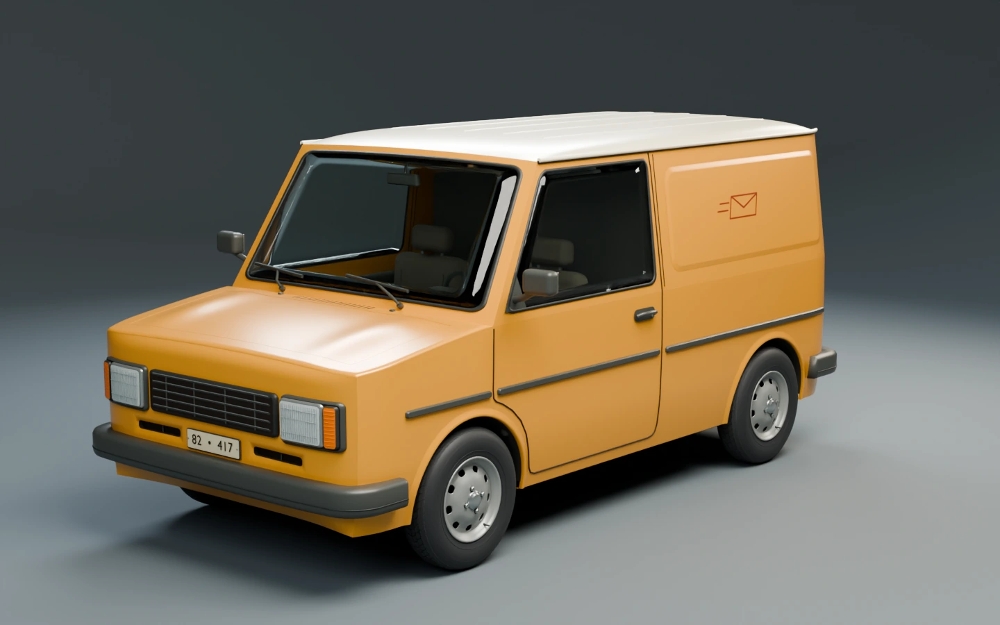
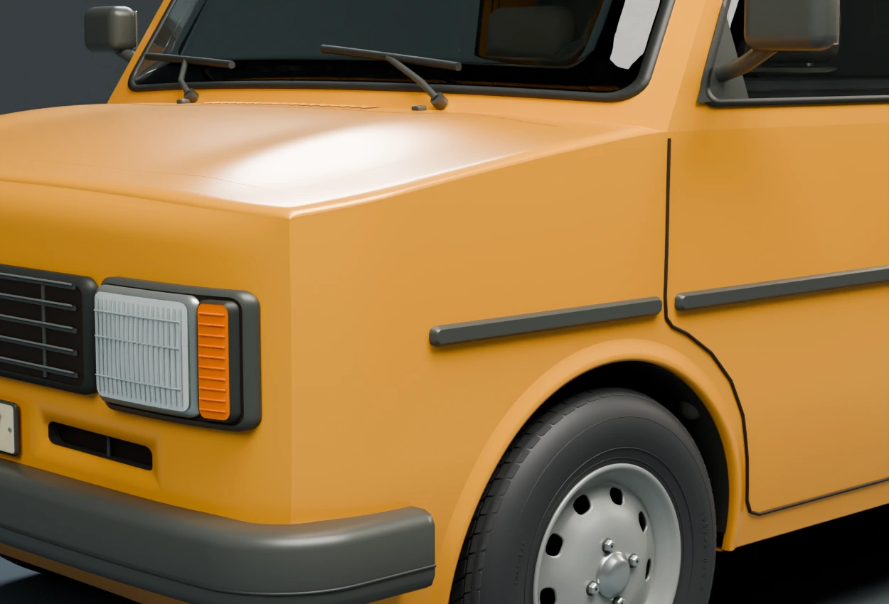

oppo2357 / Selected work
Courier van
An original vehicle model in two enamel finishes, photographed with a fixed studio rig in Blender Cycles.

Exterior detail
Fluted headlamp lenses, a recessed bonnet seam and stamped steel wheels. The ivory roof and trim keep their materials in both paint variants.
